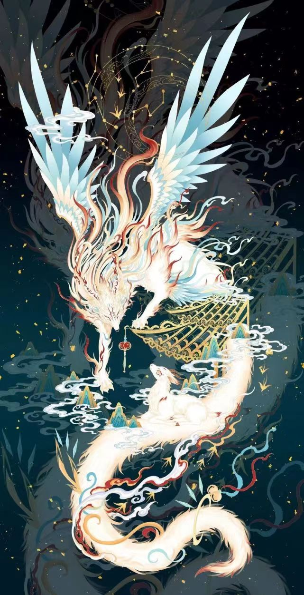
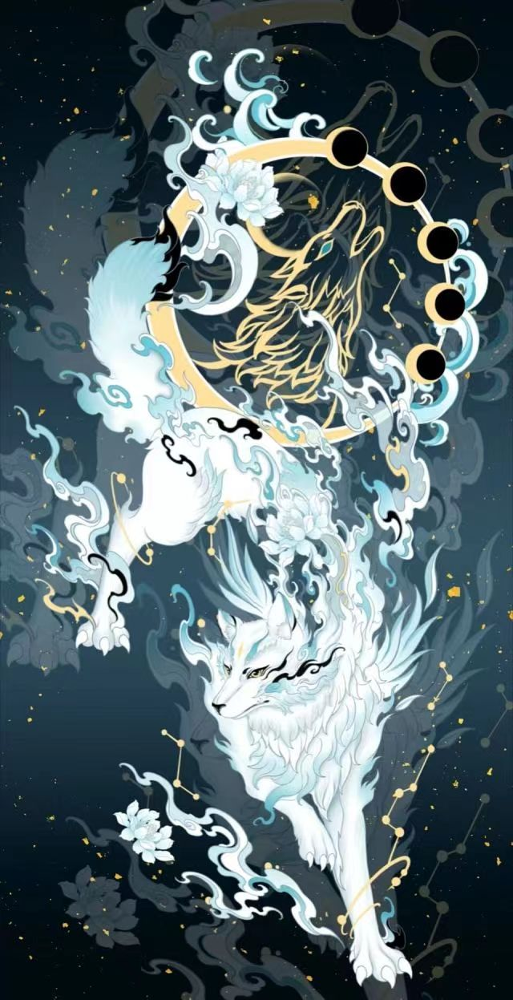

|  |  |
《山海经》是中国古代的一部神话地理著作，大约成书于战国至西汉时期。它是中国古代文献中非常重要的神话、地理、民俗的综合性文献，对后世的文学、艺术、宗教、民俗等方面产生了深远影响。
全书分为“山经”、“海经”和“大荒东西经”三大部分，共十八篇。其中：
山经：包括五篇，记述了中华大地上的名山大川及其所在方位、形态、物产、神话传说等内容。
海经：包括八篇，描述了四海之内外的岛屿、海洋以及那里的神话故事、奇异生物和珍奇宝藏等。
大荒东西经：包括五篇，主要记载了中国古代人们想象中的世界边缘的荒野地区，包括那里的奇山异水、怪兽异人等。
《山海经》中记载了大量的神话传说、奇异动植物和宝藏，这些内容体现了中国古代人民的想象力和对未知世界的探索精神。同时，《山海经》中的许多内容也反映了古代社会的风俗信仰和自然观念。
《山海经》不仅是一部极具价值的古籍，也是研究中国古代历史、文化、宗教、民俗的重要资料。由于其内容丰富、想象奇特，也常被用作现代文学创作和流行文化中的素材来源。
了解更多